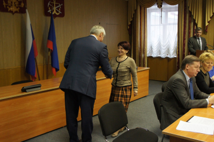

Актуальные новости
07 мая 2020
Члены Общественной палаты присоединились к акции
#ПомогиУчитьсяДома
В майские праздники в Мурманске в рамках акции
#ПомогиУчитьсяДома добровольцы из Волонтерского центра «Единой России» и ОНФ – члены
Общественной палаты Мурманской области доставили еще несколько планшетов в многодетные
семьи.
Читать далее
07 мая 2020
Общественная палата присоединилась к работе волонтёрского штаба
Волонтерский центр «Единой России» и «Общероссийского Народного Фронта» в Мурманской области
работает с 20 марта и с каждым днем количество волонтеров постоянно увеличивается.
Читать далее
28 апреля 2020
В МАГУ обсудили правовые проблемы социально-экономического и
природоохранного законодательства Арктической зоны России
27 апреля на кафедре гражданского и финансового права
состоялся онлайн-круглый стол на тему «Правовые проблемы социально-экономического и
природоохранного законодательства Арктической зоны России».
Читать далее
30 марта 2020
Региональная Общественная палата готовится к формированию пула
общественных наблюдателей
26 марта в Общественной палате Мурманской области подписаны
соглашения о сотрудничестве с региональными общественными организациями.
Дата голосования за поправки в Конституцию
Читать далее

26 марта 2020
В региональной Общественной палате состоялось вручение мандатов
членам ОНК Мурманской области
Решением совета Общественной палаты Российской Федерации
от 6 марта 2020 года в правомочном составе образована общественная наблюдательная комиссия
Мурманской области.
Читать далее
26 марта 2020
Общественная палата Мурманской области начинает прием предложений
о кандидатурах для назначения общественных наблюдателей
В целях наблюдения за проведением общероссийского
голосования по вопросу одобрения изменений в Конституцию Российской Федерации Общественная
палата Мурманской области проводит прием заявок по кандидатам для
Читать далее